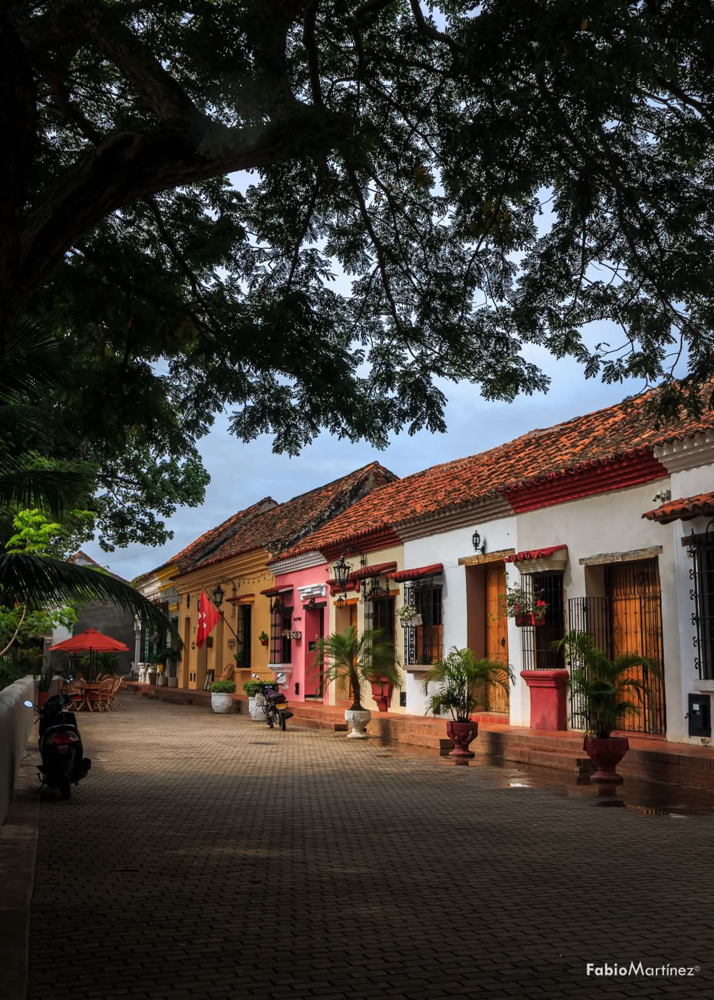
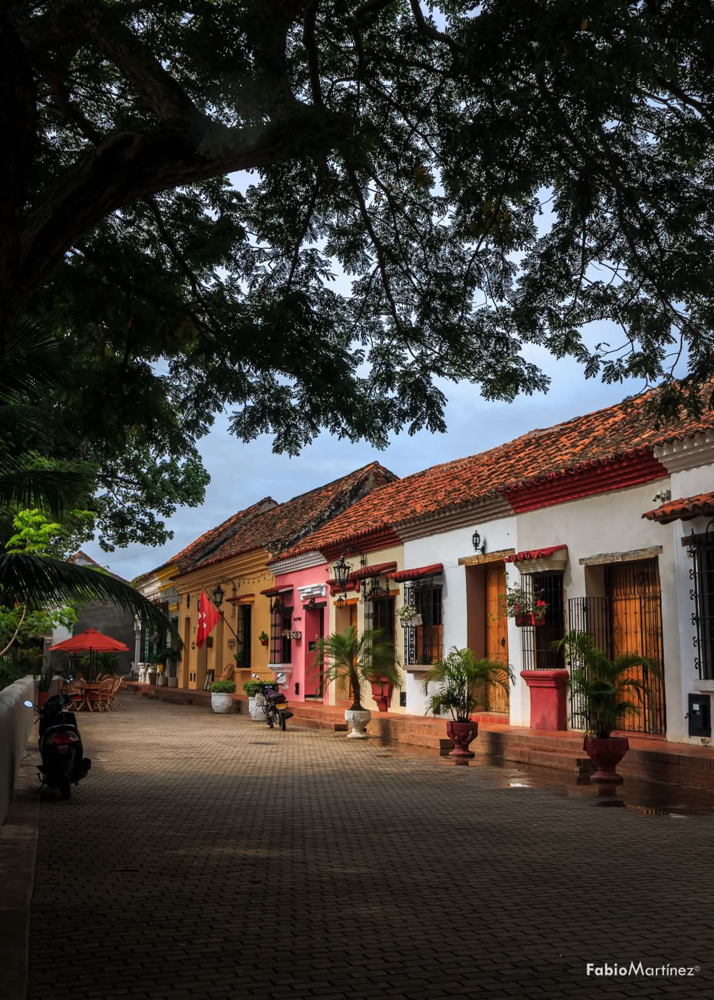
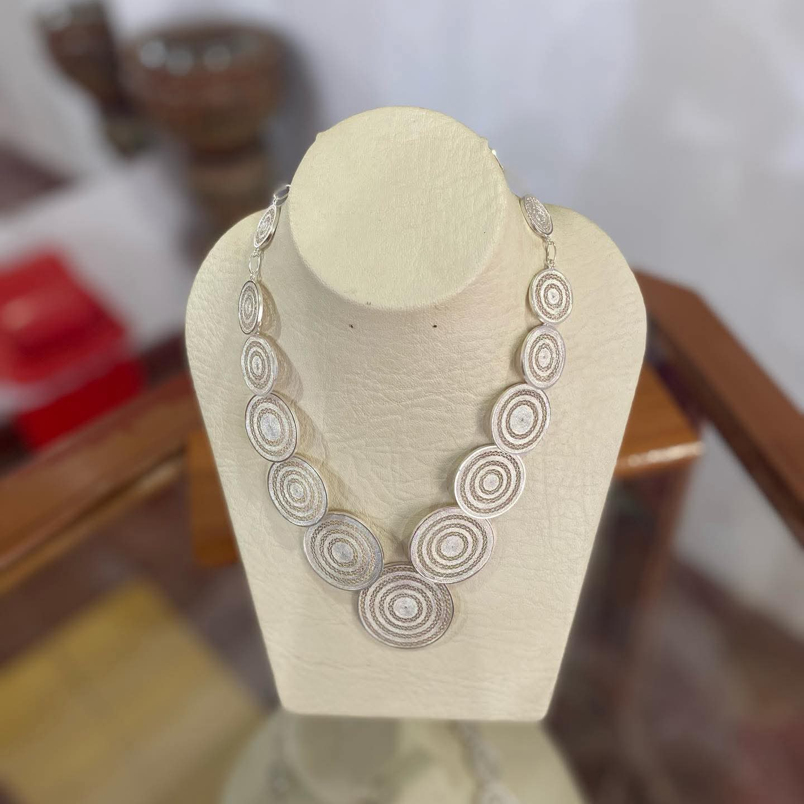
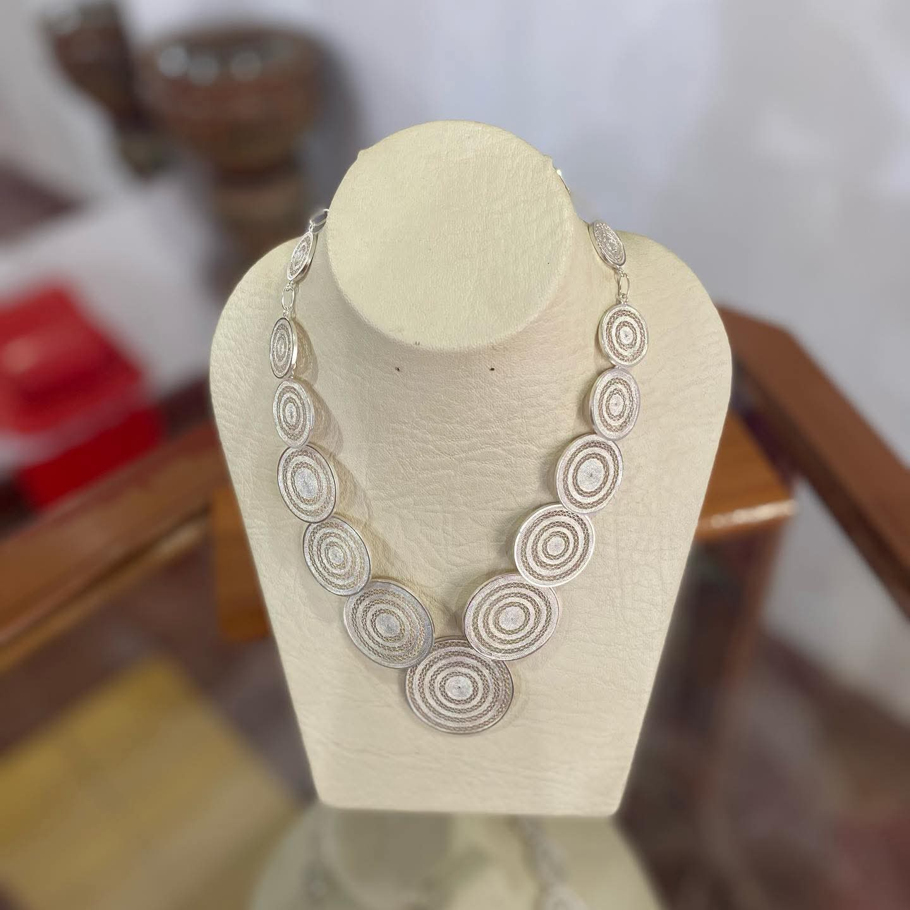

Bienvenidos
Historia, arquitectura y tradición en el corazón de Mompox.
Iglesias de Mompox
Majestuosas iglesias coloniales que reflejan historia y devoción.


Gastronomía de Mompox
Sabores locales: butifarra, queso de capa, dulces y más.


Lugares Emblemáticos
Plaza, calles coloniales y el majestuoso río Magdalena.
 


Cultura y Tradiciones

 

Cementerio de Mompox
Arquitectura y memoria: un recorrido histórico.